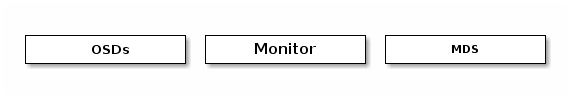

Intro to Ceph¶
Whether you want to provide Ceph Object Storage and/or Ceph Block Device services to Cloud Platforms, deploy a Ceph Filesystem or use Ceph for another purpose, all Ceph Storage Cluster deployments begin with setting up each Ceph Node, your network and the Ceph Storage Cluster. A Ceph Storage Cluster requires at least one Ceph Monitor and at least two Ceph OSD Daemons. The Ceph Metadata Server is essential when running Ceph Filesystem clients.

- Ceph OSDs: A Ceph OSD Daemon (Ceph OSD) stores data, handles data replication, recovery, backfilling, rebalancing, and provides some monitoring information to Ceph Monitors by checking other Ceph OSD Daemons for a heartbeat. A Ceph Storage Cluster requires at least two Ceph OSD Daemons to achieve an active + clean state when the cluster makes two copies of your data (Ceph makes 2 copies by default, but you can adjust it).
- Monitors: A Ceph Monitor maintains maps of the cluster state, including the monitor map, the OSD map, the Placement Group (PG) map, and the CRUSH map. Ceph maintains a history (called an “epoch”) of each state change in the Ceph Monitors, Ceph OSD Daemons, and PGs.
- MDSs: A Ceph Metadata Server (MDS) stores metadata on behalf of the Ceph Filesystem (i.e., Ceph Block Devices and Ceph Object Storage do not use MDS). Ceph Metadata Servers make it feasible for POSIX file system users to execute basic commands like ls, find, etc. without placing an enormous burden on the Ceph Storage Cluster.
Ceph stores a client’s data as objects within storage pools. Using the CRUSH algorithm, Ceph calculates which placement group should contain the object, and further calculates which Ceph OSD Daemon should store the placement group. The CRUSH algorithm enables the Ceph Storage Cluster to scale, rebalance, and recover dynamically.
RecommendationsTo begin using Ceph in production, you should review our hardware recommendations and operating system recommendations. | Get InvolvedYou can avail yourself of help or contribute documentation, source code or bugs by getting involved in the Ceph community. |